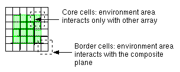
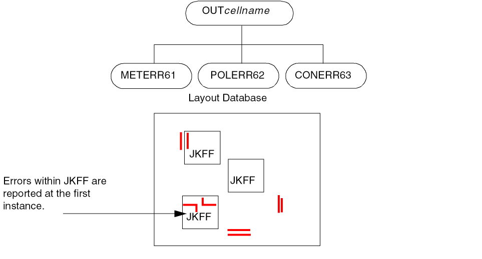

6
Setting up Hierarchical Dracula
In this chapter, you’ll learn about the following:
- About Hierarchical Dracula
- Running a Hierarchical Design Rule Check
- Selecting Hcells
- Running a Multilevel Design Rule Check
- Running a Hierarchical Electrical Rules Check
- Running a Hierarchical Network Comparison
- Running Hierarchical Parameter Extractions
- Making Hierarchical Dracula Run Faster
About Hierarchical Dracula
You can use the Dracula hierarchical tools (HDRC, HERC, HLVS, HLPE, and HPRE) on hierarchical designs in the same way you use the corresponding tools on flat designs. The basic differences are as follows:
- You must include hierarchical functions in your rules file.
- Dracula organizes your output differently, depending on which check mode you select.
In the sections that follow, you will learn
- Which Dracula functions you need in your rules file to run a hierarchical job
- How you can interpret the output from a hierarchical job
For more information about when to use hierarchical Dracula, see Chapter 4, “Selecting a Run Mode.”
Prerequisites
To run hierarchical Dracula, you must know how to run the Dracula verification tools in flat mode.
Also, you need to be familiar with how Dracula forms a two-level hierarchy consisting of the composite and Hcell planes. For a complete description of how Dracula constructs its hierarchy, see
Hierarchical Products and Modes
This table shows the products you can run in hierarchical Dracula and the modes you can use to run them. For more information about these modes, see Chapter 4, “Selecting a Run Mode.”
| CHECK-MODE= | HDRC | HERC | HLVS | HLPE | HPRE |
|---|---|---|---|---|---|
Running only cell and composite mode HDRC is not recommended because these modes do not provide Hcell-to-Hcell or Hcell-to-composite checks. Use hierarchical mode instead.
Running a Hierarchical Design Rule Check
You use hierarchical Dracula in the same way you use flat Dracula to check your design rules. When you run a hierarchical design rule check (HDRC) job, Dracula verifies your database completely. Hierarchical Dracula checks cells with highly repetitive placements only once, and then checks them against the surrounding geometries. The hierarchical output is easier to debug than flat output because errors are reported only once for all placements of a given cell.
You might need to use some or all of the hierarchical functions listed in the following table. To find more information about using the function, look in the Description column of the table.
Writing Hierarchical Design Rules
The rules file you use for a hierarchical DRC run is essentially the same as a rules file for a flat run, with the addition of several hierarchy-related functions. The following table lists the hierarchical functions that you might want to include. For more information about these functions, see the Dracula Reference manual.
You cannot use the LENGTH, EXT[G], and RELOCATE functions in hierarchical rules files. Also, you must use flat layers for nodal functions, as described in the “Using Flat Layers for Nodal Information” section
| Function | Description | Rules file block |
|---|---|---|
|
Specifies the format of cell-based error segments generated by HDRC; |
||
|
Creates cell boundaries for each Hcell on the layer you specify. See Using Cell Boundaries. |
||
|
Specifies the upper limit for the width of the Hcell environment. See Specifying a Maximum Environment Value. |
||
|
Set to |
||
|
Specifies which cells are Hcells. See Altering the Hcell Selection Criteria. |
||
|
Specifies a file containing a set of |
||
|
|
||
|
Specifies the maximum number of line segments for a cell to be an Hcell candidate, to avoid selecting large cells. |
||
|
Specifies the maximum number of placements for a cell to be an Hcell candidate, to avoid selecting small cells with a large number of placements. |
||
|
Specifies the minimum number of placements and segments for a cell to be an Hcell candidate. |
||
|
Specifies the digitized layer that contains rectilinear cell boundaries. See Using Cell Boundaries. |
||
|
Creates a flat layer from a hierarchical layer. See Flattening Layers. |
||
Specifying a Maximum Environment Value
When you run HDRC in hierarchical mode, Dracula surrounds every Hcell with a box that extends beyond the Hcell for a given distance. This distance is called the “environment value.” Dracula automatically sets the environment value to be equal to the largest value used in any spacing check in the Operation block on data that has not been flattened.
Composite geometries that fall within the environment area are checked as part of the Hcell, as shown:
The larger the environment value, the larger the amount of composite data that is checked for each Hcell instance.
-
To have PDRACULA warn you if the environment value exceeds the value you specify, include the
ENVIRONMENT-MAXfunction in the Description block.
ENVIRONMENT-MAX = 10 MIC
;
; <functions omitted>
;
EXT METAL LT 5.0 OUT METERR55
ENC CONT METAL LT 1.5 OUT CONERR56
EXT POLY DIFF LT 3.0 OUT PLYERR57
EXT PAD METAL LT 30.0 OUT PADERR58
The default environment value for this job is 30 microns. In this case, Pdracula warns you that the 30 micron spacing check exceeds the maximum environment value of 10 microns.
In response to the warning, you can do one of the following:
- Leave the environment set to the default largest size. Dracula will take extra time mapping additional data to the Hcells.
- Flatten the layers used in the 30 micron check. For more information, see the “Flattening Layers” section.
If the ENVIRONMENT-MAX value you set is larger than the largest spacing check value, Dracula reduces the environment value to the lower spacing check value.
Preventing Hcell Overlap
While selecting Hcells automatically, Dracula might choose overlapping cells. If the amount that two Hcells overlap is greater than half the area of either of the Hcells, Dracula chooses only one of the cells as an Hcell. Generally, Dracula chooses the cell with the least amount of overlapped data.
Dracula expands cells that do not qualify as Hcells and brings them up to the composite level. If the cells are nested in an Hcell, Dracula brings them up to the Hcell level and maps them to that instance of the Hcell.
Some designs run more efficiently in hierarchical mode if the Hcells Dracula uses do not overlap.
- To prevent Dracula from selecting a large number of overlapping Hcells in your design using the default criteria, put the following function in the Description block of your rules file:
EXCEPTION-ON = [HSP-OUTPUT]
This function prevents Dracula from choosing as an Hcell any cell that overlaps another cell.
You can also include EXCEPTION-ON = [HSP-OUTPUT] when you use the hierarchical SIZE function, so the results will be clean and correct.
Flattening Layers
The FLATTEN function creates a new flat layer at the top level from a hierarchical layer. It is useful only in hierarchical mode. In flat mode, the FLATTEN function uses the UNIX cp command to copy data from one file to another file with a different name.
You might need to use FLATTEN in your HDRC rules to do
You can also use FLATTEN in HLPE to extract capacitors between an internal cell node and a parent cell. See the “Flattening Layers To Extract Capacitance” section.
Avoiding Flat Processing
If you want to take full advantage of the hierarchy of your circuit when running HDRC, you can merge any operations that require flat layers into an ERC job rather than including them in an HDRC job.
Large Spacing Checks
Dracula uses the spacing value for hierarchical checks to determine the environment value, as described in the section about Specifying a Maximum Environment Value. However, Dracula does not include checks on flat layers when determining this value.
-
To do checks with large spacing values without affecting the environment value, use the
FLATTENfunction.
Pad-to-metal checks normally use large spacing values and involve many geometries. To avoid affecting the environment value, use the FLATTEN function on the pad and metal layers. To reduce the amount of data that you must process, which in turn reduces the processing time, use logical operations.
The following example creates a layer, PMET, consisting of metal geometries no farther than 30 microns from the pad geometries. Then PAD and PMET are flattened and used in the 30 micron spacing check.
; The NEIGHBOR function does these two operations:
; SIZE PAD BY 30 SPAD
; AND SPAD METAL PMET
;
NEIGHBOR METAL PAD 30 PMET
;
; <functions omitted>
;
FLATTEN PAD FPAD
FLATTEN PMET FMET
EXT[V] FPAD FMET LT 30 OUT PADERR 58
With these functions, you can perform relatively few large dimensional checks without affecting the performance of the entire HDRC run.
Using Flat Layers for Nodal Information
You must use flat layers for the following HDRC checks and operations that require nodal information:
For information on different flattening requirements for HDRC and HERC, see “Connecting the Network” section.
Checking Memories and Arrays
To process large arrays and memories, you can use the following HDRC features:
-
Multilevel mode
If your designs have repetitive structures with many levels of hierarchy, such as large DRAMs, you can use multilevel mode for HDRC runs. For more information about using this mode, see Using Multilevel Mode in Chapter 4 of this manual. -
RAM-CELL function
To reduce redundant checking, you can use theRAM-CELLfunction in the Description block of your rules file. When Dracula sets up a database for HDRC, it creates an environment area for each cell, as described in Specifying a Maximum Environment Value. In an array of cells, the environment areas of the cells around the border of an array are different because they interact with the composite plane. The environment areas of the core cells, however, are all the same. The following figure illustrates an array of cells.

The Hcell you specify for the RAM-CELL function must be a repetitive cell with simple, nonrotated placements. Composite geometries cannot overlap the core Hcells in the array.
Using HDRC Output
You view and correct errors from an HDRC run the same way you do for a flat run. The error cells can contain Hcell and composite geometries. Dracula organizes the content of the cells according to the option you specify with the CELL-ERROR-REP function. These options are described later in this section.
Viewing Hcell Error Cells
Hcell error cells contain errors associated with Hcells and any pseudolayers created by logical, SIZE, or SELECT operations that occur for all placements of the Hcells.
Dracula generates Hcell error cells when you run an HDRC in either of the following modes:
The following sample circuit contains two Hcells, INV and JKFF. There are two HDRC checks in the rules file:
EXT METAL LT 5 OUT METERR 61
SIZE POLY BY .25 OUT SPOLY 22
Hcell error cells from these checks appear as shown:
Dracula uses the layer numbers you give for output error layers to isolate the error within the Hcell output. Each output cell contains error flags on layer 61 and sized data on layer 22, if applicable. The origin of these error cells is in relation to the origin of the corresponding layout cell.
Using Error Reporting Options
You can use the CELL-ERROR-REP options to report errors using two different hierarchy structures:
-
Original design hierarchy
TheORIG-ALL,ORIG-DRC, and cellname options report errors using the original hierarchy of your design. -
Two-level hierarchy
TheONCE,HIER, andALLoptions report errors using the two-level hierarchy (composite plane, Hcell plane) that Dracula constructs. These options are described in the sections that follow.
For more information about these options, see the section about
Viewing a CELL-ERROR-REP = ONCE Error Cell
When you use CHECK-MODE=HIER with CELL-ERROR-REP = ONCE in your rules file, you get an error cell for each check. These cells contain errors that occur
- Between two Hcells
- Between an Hcell and its environment
- Between composite-level geometries that are not Hcell-related
-
At every placement of an Hcell
These errors are shown in one Hcell. This Hcell is the one closest to the minimum x/y coordinate of the primary cell.

Viewing a CELL-ERROR-REP = ALL Error Cell
The error cells produced when you set CELL-ERROR-REP=ALL in your rules file are the same as the cells produced by a flat Dracula run.
Viewing a CELL-ERROR-REP = HIER Error Cell
When you use CHECK-MODE=HIER with CELL-ERROR-REP = HIER in your rules file, you get
-
Check error cells
Dracula produces an error cell for each check. Each check error cell contains errors that occur between two Hcells or between an Hcell and its environment, but do not occur at each placement of the Hcell. Each cell also contains errors that occur between composite-level geometries that are not Hcell-related. These errors are reported flat and relative to the primary cell. -
Hcell error cells
Dracula produces an Hcell error cell for each Hcell. Each Hcell error cell contains errors that occur at every single placement of the Hcell. To see these errors at each placement of the Hcell, overlay the primary error cell,OUTprimarycellname, on the original database. To see a single instance, overlay the Hcell error cell on the original Hcell database cell.
Here is an example of checks in a rules file:
EXT METAL LT 5 OUT METERR 61
EXT POLY LT 3 OUT POLERR 62
ENC CONT METAL LT 2 OUT CONERR 63
These rules produce the following HDRC error cells, which you can overlay on both the Hcell and the top-level design:
Listing HDRC Text Output Files
HDRC text output includes the following files:
-
printfile
.sum, the error cell summary -
printfile
.log, the job tracking log -
printfile
.mlg, the mini-log file with CPU statistics and fatal errors -
printfile
.msm, the mini-summary file with nonfatal errors and warnings -
printfile
.inp, a listing of the input rules file
where printfile is the name you specify with the PRINTFILE function in the Description block of your rules file.
For a complete description and examples of HDRC output, see
Selecting Hcells
You usually let Dracula select Hcells automatically by running HDRC in hierarchical mode first. If the results are not satisfactory, you might want to choose your own Hcells.
To select the Hcells to use in hierarchical Dracula jobs, you need to be familiar with how Dracula forms its two-level hierarchy by creating the composite and Hcell planes. For a complete description of how Dracula chooses Hcells, see
Selecting Hcells Automatically
For hierarchical and multilevel HDRC, Dracula uses default selection criteria to select Hcells automatically. There is one set of criteria for hierarchical HDRC and a different set for multilevel HDRC. You can find a description of these criteria, along with instructions for changing or overriding them, in the
HCELL function in your rules file and Dracula cannot identify any Hcells, Dracula automatically switches to flat mode.Run HDRC with the default Hcell selection first, particularly if you are not familiar with the layout hierarchy. You can look at the following files to determine which cells Dracula chose to be Hcells:
-
The
CANDIDAT.DATfile lists the Hcells that Dracula chose:1 INV 2 1 5 0 20xxxxxxx
2 JKFF1 8 6 9 0 xxxxxxxxxxxxxx
-
The EXPAND stage of the
.logfile lists Hcell selection statistics:******************************************************* */N* EXPAND ( REV. 4.3 / SUN-4 GENDATE: 12-APR-95/13 ) *** ( Copyright 1995, Cadence ) *** */N* EXEC TIME =15:37:49 DATE = 2-MAY-95 HOSTNAME = xxxxxx *******************************************************
RUN-MODE = 3 TREE-FILE = TREEGRAY
5.2500 0 0 0 1 0 0 0 0
**** ENVIRONMENT = 5.2500 *****
***** HCELL-SELECT-CONDITION *****
# OF PLMTS # OF LINE-SEGMENTS 2 44
# OF CELLS : 8 # OF PLACEMENTS : 29
PRIMARY CELL : GRAYCODE5
NUMBER OF H-CELLS = 2 : UPDATED NUMBER OF HCELLS = 2
NUMBER OF BOXES = 13 NUMBER OF CELL PLMTS = 13
NO CELL PLACEMENT WITH MAGNITUDE < > 1 : ******* CHECK BOX OVERLAP *******
INDIVIDUAL CELL STATISTICS 8 8
# OF # OF ORIGINAL PLACEMENTS PLACEMENTS LEVEL KIDS HCELL 1 GRAYCODE5 0 1 2 28 0 2 INV 5 9 1 0 1 3 NO2 0 1 1 0 0 4 PAD 0 11 1 0 0 5 ND4 0 1 1 0 0 6 ND3 0 1 1 0 0 7 ND2 0 1 1 0 0 8 JKFF1 4 4 1 0 2
# OF # OF LINE-SEGSTEXTS ******** CELL BOUNDARY ********
1 GRAYCODE57765 0 0 -1890 20060 12235 2 INV 142 0 0 0 2200 840 3 NO2 214 0 0 0 2200 1120 4 PAD 12 0 0 0 1200 1540 5 ND4 274 0 0 0 2200 1680 6 ND3 214 0 0 0 2200 1120 7 ND2 175 0 0 0 2200 840 8 JKFF1 1180 0 0 0 2940 7260
*/M** TOTAL NUMBER OF EDGES IF FLATTENED = 7765 NUMBER OF EDGES IN H-CELLS = 5430 H-CELL COVERAGE RATE = 69.93% FULL HIERARCHICAL EDGES = 2969 2-LEVEL HIERARCHICAL EDGES = 3657
# OF CELLS : 8 # OF PLACEMENTS : 29 ORIGINAL # OF PLMTS BRANCHES = 29 NEW # OF PLMTS BRANCHES = 33 : ----------------------- HCELL CANDIDATES ---------------
1 INV 2 1 5 2 JKFF1 8 6 9
--------------------------------------------------------
Selecting Hcells Manually To Improve Performance
If your circuit performs poorly in hierarchical mode, you might be able to improve performance by choosing different Hcells.
General Guidelines
Look for Hcells that have all of these qualities:
-
Repetitive
The Hcell should be placed at least four times (more is better). -
Complex
The best candidate for an Hcell contains about 5% of the total design. -
Nonoverlapping
The Hcell must not overlap with other cells or noncell geometries.
The challenge is to find Hcells that are both complex and repetitive. If the Hcell is too simple, most of the processing time is spent on bookkeeping. A contact cell is an example of a poor choice for an Hcell. The cell is repeated many times, but is too simple to improve the processing time for a hierarchical check.
Try to pick Hcells that are near the middle of the hierarchy tree. The cells at the bottom of the hierarchy might have many instances, but they are very simple. Cells near the top of the hierarchy are complex, but may only be placed a few times.
Choose few Hcells rather than many. For memory-based designs, for example, a single Hcell is the best choice.
Getting Started
-
Start with the basic
HCELL-RULEfunction.
If you have never selected your own Hcells, the following is a good rule to start with. The rule specifies that, to qualify as an Hcell, a cell must be placed more than 5 times if it contains more than 1000 segments, or more than 10 times if it contains more than 500 segments.HCELL-RULE 5,1000 10,500
-
Check the log file for the Hcell area coverage rate.
After you run Dracula using these criteria, look at theEXPANDstage of the.logfile. This part of the file tells you how much of the total area of your design is covered by Hcells that were selected using your criteria. In the following example, the coverage rate is 86.08%.*/M** TOTAL NUMBER OF EDGES IF FLATTENED = 7673 NUMBER OF EDGES IN H-CELLS = 6605 H-CELL COVERAGE RATE = 86.08% FULL HIERARCHICAL EDGES = 2959 2-LEVEL HIERARCHICAL EDGES = 3039
Try to pick Hcells to increase the coverage rate and decrease the number of Hcells listed in theCANDIDAT.DATfile. You want the number of Hcells listed to be less than 200.
Running a Multilevel Design Rule Check
For designs on which the standard two-level HDRC does not run as efficiently as you want, you can use multilevel HDRC. Memory chips where overlap is minimal are the best candidates for multilevel HDRC, as described in “Using Multilevel Mode”.
Understanding Multilevel Processing
To process a multilevel design, Dracula creates multiple two-level hierarchies, starting at the top level. The following figure shows the first level of a multilevel design. Dracula creates the composite layer on the top level. It creates frames for the Hcells and checks the composite layer and its connections to the Hcell frames.
The size of the Hcell environment area is the largest spacing value in a hierarchical DRC check (see Specifying a Maximum Environment Value). However, if there are intrusions into the Hcell, the spacing value is increased.
When Dracula has checked the top level, it goes to the next level, which is the cellA Hcell in the previous example. Treating cellA as the top level, Dracula again creates a composite plane with frames around the Hcells that cellA contains. Dracula continues down the hierarchy in this fashion.
Running a Multilevel Hierarchical DRC
You can use an HDRC rules file for multilevel HDRC. See Running a Hierarchical Design Rule Check.
To run a multilevel HDRC, see
Running a Hierarchical Electrical Rules Check
To check the electrical parameters of a circuit, you use hierarchical Dracula in the same way you use flat Dracula. You verify your cells prior to verifying the top-level design. Then, when you verify the top-level design, Dracula treats cells as blocks with pin names only, and checks only the external connections to other blocks.
Writing Hierarchical Electrical Rules
The rules file you use for an HERC run is the same as the rules file for a flat run, with the addition of several hierarchy-related functions. The following table lists the Dracula hierarchical functions that you might want to include. For more information about these functions, see the Dracula Reference Manual.
In cell or composite modes, HERC functions can be run with HLVS and HLPE functions in the same rules file, because they use the same mechanism for defining Hcell and cell text
| Function | Description | Rules file block |
|---|---|---|
|
Cell mode only. For a description of this function, see Bringing Text Up to the Hcell Level. (Not recommended — causes HERC errors.) |
||
|
Creates cell boundaries for each Hcell in the |
||
|
Composite mode only. For a description of this function, see Flattening Power and Ground Text. |
||
|
Specifies which cells are Hcells. Mandatory for HERC. ( |
||
|
Specifies a file containing a set of |
||
|
Specifies layers containing composite-level geometries that must be mapped into Hcells. See Using Composite Plane Geometries in Hcells. |
||
|
Specifies the digitized layer that contains rectilinear cell boundaries. See Using Cell Boundaries. |
||
|
Checks for composite geometries on the specified layer that touch or overlap Hcell bounding boxes. |
||
|
Checks for geometries from the layer1 composite plane that overlap Hcell layer2 geometries. Checks for geometries from the layer2 composite plane that overlap Hcell layer1 geometries. |
||
|
Outputs composite-to-cell and cell-to-cell devices that are not present in the schematics. Composite mode only. |
||
|
Checks for contacts that are not covered by a related conductor layer in either the composite plane or Hcells. |
Deciding What To Check
When you run HERC in cell mode, Dracula verifies only the Hcells in your database.
When you run HERC in composite mode, Dracula does the following:
- Checks the interconnect between Hcells
- Checks cells that are not defined as Hcells
-
Runs
SAMELAB,MULTILAB,SOFTCHK,ELCOUNT, andPATHCHKchecks on the Hcell contents
For a complete verification, you must run both cell mode and composite mode HERC. All checks that you run in composite mode must be the same checks you ran in cell mode.
Connecting the Network
Although you need to flatten layers to do nodal checks in HDRC, you do not need to flatten the layers you use in CONNECT functions for HERC and HLVS.
HDRC doesn’t use Hcell text labels. In the following figure, A, B, and C are all on the same node. The B geometry in the Hcell has text labels on both sides of the Hcell boundary. In a composite mode HDRC, however, Dracula ignores the boundary text and treats A and C as two different nodes, unless you flatten the layers.
HERC and HLVS require and work with labelled Hcell boundaries. For HERC and HLVS, Dracula makes the connection from the text on the Hcell boundary. HERC/HLVS treat A, B, and C as one node, without requiring flat layers.
Flattening Power and Ground Text
You can flatten the power and ground text from the Hcell level to the composite level. This feature is useful in the following cases:
- You are running a composite mode HERC and you have not texted the top-level structure
- You want additional text on the composite plane
- To flatten power and ground text to the composite level, include this function in the Description block of your Dracula rules file:
FLATTEN-PWRGND = YES
In the following example, VDD and VSS from both Hcells are expanded up to the composite level for use with composite mode HERC. If there is a power or ground short from the MULTILAB function, the output error cell, which lists the shortest distance between two texted points, might be shorter because you have more text. See Viewing the SHORTBOX Cell.
Excluding Hcell Geometries in HERC
Although you can use the FRAME BY option with the HCELL function to remove Hcell geometries from processing, there are reasons to avoid this option in HERC:
- If cell text is placed within the area of the Hcell that is excluded from processing, the text is also excluded, so nodal information is not available.
- If you have routing over your Hcells, shorts between composite nodes and nodes inside the core of the Hcell are not flagged because the core is excluded from processing.
The FRAME BY option causes false HERC errors and is not recommended for an HERC run.
Using Composite Plane Geometries in Hcells
In hierarchical Dracula, you can form devices solely within Hcells or solely on the composite plane, but not between the composite plane and Hcells. However, you can use the BASE-LAYER function to include portions of composite geometries in your Hcells to form devices.
You might want to create a flat layer on an otherwise hierarchical circuit. For example, you can create cells in a pwell CMOS process that have no pwell layer. Then, after you create the entire circuit, you can create the pwell layer as a flat layer where needed. You need to map the flat or composite pwell geometries to the Hcell so that the Hcell is complete and n-channel devices can be formed in the Hcells.
*INPUT-LAYER
ACTIVE = 1
POLY = 2 TEXT = 61 ATTACH = METAL
METAL = 3
PWELL = 6
BASE-LAYER = PWELL
CONNECT-LAYERS = NSUB PWELL PSD NSD POLY METAL
* END
*OPERATION
;
; <functions omitted>
;
ELEMENT MOS[N] NGATE POLY NSD PWELL
*END
You need the pwell layer to form the body of n-channel devices in the Hcells. Dracula includes overlapping portions of the pwell layer from the composite plane in the Hcells, as shown in the following figure.
If you use the BASE-LAYER function in cell mode, you must also use it in the subsequent composite mode run to ensure proper verification.
For a complete description of this function, see the section about the
Using HERC Output
You view and correct errors from an HERC run the same way you do for a flat run. The error cells can contain Hcell and composite geometries.
Viewing Cell Mode Error Cells
A sample circuit contains two Hcells, INV and JKFF. The rules file contains this HERC check:
MULTILAB OUTPUT MULLAB 52
When you include checks that have nodal-type output, such as MULTILAB, Dracula produces multiple layers for that check. For example, if your design has 7 connect layers and 4 contact layers, Dracula outputs 11 different layers to carry the nodal information. The INV_CEL and JKFF_CEL output cells in the following figure contain layers 52 to 62, which all have geometries from the MULTILAB check.
To find out what the output layers are, look in your printfile.erc file MULTILAB summary. The layer numbers start at the layer number you specify for the MULTILAB output cell, and increment by one. In the following example, the output layer number the user specified was 40. There were 3 contact layers specified in CONNECT functions and 6 connection layers specified in the CONNECT-LAYER function. The last layer is the SHORTBOX cell, described in Viewing the SHORTBOX Cell.
***** MULTILAB SUMMARY *****
0 TRAPEZOIDS ARE SELECTED FROM 3METAL TO SHORTS40 AT LAYER 40
0 TRAPEZOIDS ARE SELECTED FROM 3POLY TO SHORTS40 AT LAYER 41
0 TRAPEZOIDS ARE SELECTED FROM 3PSD TO SHORTS40 AT LAYER 42
0 TRAPEZOIDS ARE SELECTED FROM 3NSD TO SHORTS40 AT LAYER 43
0 TRAPEZOIDS ARE SELECTED FROM 3PWELL TO SHORTS40 AT LAYER 44
0 TRAPEZOIDS ARE SELECTED FROM 3NSUB TO SHORTS40 AT LAYER 45
0 TRAPEZOIDS ARE SELECTED FROM 030CONT TO SHORTS40 AT LAYER 46
0 TRAPEZOIDS ARE SELECTED FROM 030NTAP TO SHORTS40 AT LAYER 47
0 TRAPEZOIDS ARE SELECTED FROM 030PTAP TO SHORTS40 AT LAYER 48
0 TRAPEZOIDS ARE SELECTED FROM SHORTBOX TO SHORTS40 AT LAYER 49
Viewing Composite Mode Error Cells
MULTILAB OUTPUT SHORTS 52 1
SAMELAB OUTPUT OPENS 41 2
the composite error cells for HERC are organized as follows.
The results of ELCOUNT and PATHCHK on the Hcell plane are passed to the pins of the Hcells. Any composite node connecting to those Hcell pins combines the pin information with the composite node.
Viewing the SHORTBOX Cell
The MULTILAB error output shows the composite geometries that represent the shortest path between two texted points where a short occurred. When you include a MULTILAB check in your HERC rules file, Dracula creates a cell called SHORTBOX. The SHORTBOX cell contains the cell bounding boxes through which the composite node passed. Overlay this cell on with your MULTILAB error cell to locate errors, as shown in the right side of the following figure.
Listing HERC Text Output Files
HERC text output includes the following files:
-
printfile.sum, the error cell summary -
printfile.erc, the HERC summary report containingSOFTCHKresults, text information, shorts, opens, and error cell summaries -
printfile.log, the job tracking log -
printfile.mlg, the mini-log file with CPU statistics and fatal errors -
printfile.msm, the mini-summary file with nonfatal errors and warnings -
printfile
.inp, a listing of the input rules file
where printfile is the name you specify with the PRINTFILE function in the Description block of your rules file.
For information about HERC output, see
Running a Hierarchical Network Comparison
To completely verify the connectivity of a circuit, you use hierarchical Dracula in the same way you use flat Dracula. You verify your cells prior to verifying the top-level design.
For more information about HLVS, see
Writing Hierarchical Network Comparison Rules
The rules file you use for an HLVS run is the same as a rules file for a flat run, with the addition of several hierarchy-related functions. The following table lists the Dracula hierarchical functions that you might want to include in your rules file for an HLVS run. For complete documentation about these functions, see the
BASE-LAYER function is the only exception to this rule| Function | Description | Rules file block |
|---|---|---|
|
Cell mode only. For a description of this function, see Using Cell Mode in Chapter 4. |
||
|
Creates cell boundaries for each Hcell. See the section about Using Cell Boundaries. |
||
|
Instructs Dracula to automatically text Hcells and place the text in a HEDTEXT file. See “Using GEN-TEXT To Hcell Text”. |
||
|
|
||
|
Generates a frame inside Hcell boundaries for automatic texting. |
||
|
|
||
|
Specifies which cells are Hcells. See “Altering the Hcell Selection Criteria”. |
||
|
SVS only. Specifies whether the first column in the |
||
|
Specifies a file containing a set of |
||
|
|
||
|
Specifies the maximum number of line segments for a cell to be an Hcell candidate, to avoid selecting large cells. |
||
|
Specifies the maximum number of placements for a cell to be an Hcell candidate, to avoid selecting small cells with a large number of placements. |
||
|
Specifies layers containing composite-level geometries that must be mapped into Hcells. See “Using Composite Plane Geometries in Hcells”. |
||
|
Specifies the digitized layer that contains rectilinear cell boundaries. See “Using Cell Boundaries”. |
||
|
Cell mode only. See Specifying Texting Layers in Chapter 4 of this manual. |
||
For complete verification, you must run both cell mode and composite mode HLVS.
.SUBCKT definition in a SPICE/CDL netlist. In composite mode, only the I/Os are required, not the transistors. All I/Os defined in the netlist must be texted on the Hcell with the same name. For more information about texting Hcells, see Texting for Cell Mode in Chapter 4 of this manual.HLVS Prerequisites
See
You might want to create separate composite- and cell-mode rules files, because some functions might be different between the two files.
GEN-TEXT-FILE, HEDTEXT, and CTEXT/ATTACH can be used in both files, depending upon your application.| Type | Function | Reference |
|---|---|---|
|
See “Using GEN-TEXT To Generate Hcell Text” in Chapter 4 of this manual. |
||
| Type | Function | Reference |
|---|---|---|
|
See “Using GEN-TEXT To Generate Hcell Text” in Chapter 4 of this manual. |
GEN-TEXT-FILE, HEDTEXT, and CTEXT/ATTACH can be used in both files, depending upon your application.Excluding Hcell Geometries in HLVS
When you use the FRAME BY option with the HCELL function for composite-mode HLVS, only the data falling within the distance you specify from the Hcell bounding box is processed.
If you are in an intermediate verification stage and need quick results, you can use FRAME BY after you run cell mode HLVS. Because Dracula does not process the entire cell, FRAME BY reduces the amount of data processed in composite mode.
For example, if you include this function in your rules file
HCELL INV INV1 FRAME BY 5
only the internal cell data falling within 5 microns of the Hcell bounding box is processed, as shown.
FRAME BY in the final verification stages because this function excludes portions of your design, masking potential problems.Using Cell Boundaries
For each Hcell, Dracula creates a rectangular cell bounding box that surrounds all geometries in the Hcell. These boxes are put in a cell called 0CELLBOX that you can overlay on your output cells. You can specify the layer number for the geometries in this cell with the CELLBOX-LAYER function in the Description block.
The following example shows a nonrectangular Hcell and the bounding box Dracula generates for it.
When you use the HCELL FRAME BY option or the GEN-TEXT-FRAME function for composite-mode HLVS, only data falling within the distance you specify from the Hcell bounding box is processed. For this example, if the Dracula-generated bounding box is used, two pins are lost, and the cell does not match the .SUBCKT I/Os in the netlist.
-
To prevent this problem, you can create a graphic input layer with cell boundary geometries for nonrectangular cells. Specify this layer with the
CELLBNDYfunction in the Input-layer block of your rules file.
Dracula uses the CELLBNDY layer for the boundaries you create, and Dracula-generated bounding boxes for the Hcells for which you don’t supply boundaries.
You can also use the CELLBNDY layer with BASE-LAYER for gate arrays. For example, if your cells consist only of metal but diffusion and poly are composite data, devices are electrically inside the cell but built from polygons outside the Dracula bounding box.
Marking Feedthroughs on the Layout
You might have interconnects (feedthroughs) on your layout that run through an Hcell without making connections to any devices in the Hcell. These feedthroughs do not have a counterpart in the netlist Hcells because they are part of the composite plane interconnect, not the Hcell. You must identify feedthroughs in your Hcell layout by giving them a text label of this form:
FTHRU#
where # is a number of your choice.
In cell mode, HVLS ignores feedthroughs. In composite mode, HLVS connects them to nodes.
-
To generate feedthrough text automatically, use
GEN-TEXT-FLTNODEin the Description block of your rules file.
See “Using GEN-TEXT To Generate Hcell Text” and “GEN-TEXT Commands” in the “Comparing Layouts and Schematics (LVS)” chapter of the Dracula Reference.
Using a Cross-Reference File for Hcell Names
For cell and composite mode HLVS and HLPE, Dracula requires layout cell names to match equivalent schematic .SUBCKT names. If you were not aware of this requirement when you created your schematics and layout, you can correct problems with cell names using an Hcell file (HCELL-FILE = fileName) to match names of Hcells between the schematic and layout.
Here are the contents of a sample HCELL-FILE that matches layout and schematic cell names:
NOR2 no2
NAND2 na2
REG chip
Preparing Your Netlist
If HLVS is unable to complete the initial correspondence between layout Hcells and schematic Hcells, you might have to edit your netlist. Statements that you might have to include in your netlist are
See the sections that follow for examples of how to use these statements.
For details, see
Using a Netlist with Node Numbers
If your netlist is in true SPICE format, it uses node numbers rather than node names. To use this netlist in an HLVS run, you must include a local *.EQUIV statement for each Hcell to cross-reference the node numbers in the netlist to node names on the layout.
.SUBCKT INV 3 17
*.EQUIV OUT=3 IN=17 VSS=0 VDD=99
M1 3 17 99 99 PMOS
M2 3 17 0 0 NMOS
.ENDS
.SUBCKT definitions in SPICE/CDL, but they need to define only I/Os, not transistors.Adding Global Signals
You might have global Hcell I/O signals that are not defined as I/O signals in the .SUBCKT definition, but are required to match the layout Hcell with the netlist Hcell. To define these I/O signals in your SPICE/CDL netlist, use the *.PIN statement.
Any node defined by the *.PIN statement must be previously defined as a *.GLOBAL node. Here is an example:
*.GLOBAL VDD VSS
*.PIN VDD VSS
.SUBCKT INV OUT IN
M1 OUT IN VDD VDD PMOS
M2 OUT IN VSS VSS NMOS
.ENDS
If you put a *.PIN statement outside a .SUBCKT definition, the global signals you define apply to all Hcell .SUBCKTs. If you put the *.PIN within a .SUBCKT definition, the I/Os apply to only that subcircuit.
Removing Global Signals from Selected Subcircuits
For selected subcircuits, you can use the *.NOPIN statement to remove global I/Os that you previously defined in a *.PIN statement. Here is an example where the CXFR transfer gate does not need a connection to VDD on the layout to match the netlist.
*.GLOBAL VDD VSS
*.PIN VDD VSS
.SUBCKT INV OUT IN
M1 OUT IN VDD VDD PMOS
M2 OUT IN VSS VSS NMOS
.ENDS
.SUBCKT CXFR A B C
*.NOPIN VDD
M1 A B C VSS NMOS
.ENDS
Compiling Your Netlist
To compile your netlist, you must run LOGLVS just as you do for flat Dracula.
-
To run HLVS, you must include the Hcell file name with a
CELLcommand to LOGLVS when you compile your netlist.
For details and examples, see
Running Hierarchical Parameter Extractions
You use hierarchical Dracula in the same way you use flat Dracula when you extract parasitics from your circuit. To avoid duplicate processing, you extract parasitics from your cells prior to extracting the top-level design. Then, when you process the top-level design, cells are treated as blocks with pin names only.
For more information about how to run HLPE and HPRE, see these sections in the Dracula Reference.
-
HLPE
“Hierarchical LPE” in the “Extracting Electrical Parameters (LPE)” chapter -
HPRE
“Hierarchical PRE” in the “Extracting Parasitic Resistance (PRE)” chapter
About Hierarchical Parameter Extraction
Initially, you might want to verify that your Dracula HLPE/HPRE rules file works on a flat database. You can then use it for hierarchical extraction, to take advantage of the smaller hierarchical netlist.
Extracting Capacitance Hierarchically
Hierarchical Dracula can extract capacitance between internal cell nodes in the same cell with the same placement during the cell mode run. However, nodes in one cell placement cannot be referenced from another cell. So although Dracula can extract internal capacitors, there is no way to describe them in a hierarchical netlist without making every node in every cell a pin on the netlist.
This problem appears in the following cases:
-
Capacitance between internal cell nodes and nodes in the parent cell
Dracula cannot list the capacitor in cross-coupled format because the node within the cell is not defined in the parent cell.
In lump sum format, Dracula lists the capacitor between the node in the parent cell and ground. Dracula cannot list the capacitance between the internal cell node and ground as part of the parent cell.
You can extract this capacitance by flattening layers. -
Capacitance between internal cell nodes of different cells
There is no way to list this capacitor. Dracula can’t list it for the parent cell of the two different cells, because neither node is in the parent cell. Dracula can’t list it for the cell that contains the internal node unless the capacitor occurs in every placement. When Dracula extracts the cell capacitance, it can’t determine how the cell will be placed in the future and what capacitors that placement will create. -
Capacitance between internal cell nodes of the same cell in different cell placements
This case has the same problems as capacitance between internal cell nodes of different cells, described previously.
Flattening Layers To Extract Capacitance
You extract capacitors between internal cell nodes and parent cell nodes by flattening layers. To flatten layers, you flatten all nodes in the cell to the parent cell and assign all those nodes to ground. Here is an excerpt from a rules file that uses the flattening method:
;
; <functions omitted>
;
; Create flattened layer
FLATTEN METAL2 FLA2
;
; Set up nodal information for the flattened layer
LINK FLA2 TO VSS
;
; Create capacitance recognition layer
NOT METAL1 METAL2 MT1N2
AND MT1N2 FLA2 CA1F2 ; recognition layer for capacitance
; between metal1 and fla2
;
; Extract parasitic capacitance
PARASITIC CAP[A] CA1F2 METAL1 FLA2 ; capacitors between
ATTRIBUTE CAP[A] 1 1 ; metal1 and fla2
;
; <functions omitted>
;
Do not build a recognition layer between a flattened layer and BULK if BULK is at the same potential, that is, the flattened layer and BULK have the same signal name.
The parent cell does not have to be the immediate parent. The parent cell and the cell containing the internal node can have several levels of hierarchy between them. You can use the flattening method for both cross-coupled and lump sum formats.
When you flatten layers, Dracula finds capacitors between nodes in both the child cell and the parent cell.
You can also use the EXPLODE function to extract capacitors between internal cell nodes and parent cell nodes.
Extracting Resistance Hierarchically
Unlike capacitors, resistors that have one node in an internal cell and one node in the parent cell are not really a problem. When you run extraction on
-
The internal cell
Dracula extracts the portion of the resistor that is in the cell. -
The parent cell
Dracula extracts the resistance in the parent cell and connects the resistor terminal to the I/O of the cell. The pad layer defines where the I/O point of the cell is.
When you run HPRE to extract resistors hierarchically, each I/O point becomes a different subnode. If you have a signal that leaves the cell at more than one
I/O point, check your output file for problems.
Writing Parameter Extraction Rules
The rules file you use for an HLPE or HPRE run is the same as the rules file for a flat run, with the addition of several hierarchy-related functions. The table in the “Running a Hierarchical Network Comparison” section lists the Dracula hierarchical functions that you might want to include in your rules file for an HLPE or HPRE run. For complete documentation about these functions, see the Dracula Reference.
BASE-LAYER function is the only exception to this rule.For a complete verification, you must run both cell mode and composite mode HLPE or HPRE.
Using a Cross-Reference File for Hcell Names
For cell and composite mode HLPE, Dracula requires that layout cell names and their equivalent schematic .SUBCKT names must be the same. If you were not aware of this requirement when you created your schematics and layout, you can correct problems with cell names by using an Hcell file (HCELL-FILE = fileName) to match the names of the Hcells in the schematic and layout.
For example, here are the contents of an HCELL-FILE that matches layout and schematic cell names:
NOR2 no2
NAND2 na2
REG chip
Using HLPE To Extract a Complete Netlist
To use HLPE to extract a netlist of your complete circuit (Hcell plane and composite plane) in hierarchical Dracula, do the following.
-
Run a cell-mode HLPE.
The transistor-level netlist contains.SUBCKTdefinitions for each Hcell listed in yourHCELL-FILE. You specify the name of the netlist with theOUTPUToption of theLPESELECTfunction.LPESELECT[S] CAP GT 0.0 OUTPUT SPICE
The cell-mode netlist has a.CELextension. -
Run a composite-mode HLPE, using the same
OUTPUTfile name with theLPESELECTfunction that you used for the cell-mode run.
Dracula extracts a netlist with elements and parasitics from the composite plane and calls to the.SUBCKTdefinitions created in cell mode. This netlist is appended to the netlist extracted from the cell-mode run, making a complete two-level hierarchical netlist.
The composite-mode netlist has a.DATextension.
Making Hierarchical Dracula Run Faster
Hierarchical Dracula is, in general, faster than flat Dracula on a hierarchical design, because it takes advantage of the repetitive data structures of that design. In this section, you will learn how to improve hierarchical Dracula performance by
For more help with improving hierarchical Dracula’s performance, you can also see “Improving Preformance”.
Maximizing Operations
To process a design, hierarchical Dracula must first set up the database by selecting Hcells, creating Hcell environments, and doing other hierarchical bookkeeping that flat Dracula does not do.
To make the best use of this setup time, include as many design rules as you can in the Operation section of your rules file. Because the setup time is the same whether you run a few rules or many, it is most efficient to run many rules at once.
When you are running hierarchical Dracula, you can improve processing time by removing checks that require nodal information and checks with large spacing values. Run these checks separately in flat mode.
Minimizing Redundant Checking
You can minimize redundant checking by avoiding Hcell overlaps. Dracula sets up Hcells by creating an environment area around them that is as wide as the largest spacing check on hierarchical layers in the Operations block. When Hcells overlap, their environments also overlap. Because Dracula checks the environment of each Hcell, Dracula checks certain overlapping environment areas many times.
You can solve the problem of overlapping Hcells as follows:
-
Use
ENVIRONMENT-MAX
Set this value as small as possible to minimize environment overlaps. To keep the environment value as small as possible, use flat checks for the operations with large spacing values. See “Specifying a Maximum Environment Value”. -
Use
EXCEPTION-ON=[HSP-OUTPUT]
Include this option in the Description block of your rules file so that Dracula does not select overlapping Hcells. See “Preventing Hcell Overlap”.
If your design contains a large number of overlapping cells, a flat run might take less time than a hierarchical run.
Altering the Hcell Selection Criteria
If you use Dracula’s automatic Hcell selection and your job does not perform well, you may want to choose Hcells yourself. See “Selecting Hcells Manually To Improve Performance”.
You can alter the Hcell selection criteria with these functions:
-
HCELL
Specify names of cells you want to be Hcells. This list overrides automatic Hcell selection. To manually select Hcells, useHCELL-FILEto provide a list of selected Hcells in an external file. -
NOT-HCELL
Specify names of cells you do not want to be Hcells (HDRC only). -
HCELL-RULE
Specify the minimum number of placements and segments for a cell to be an Hcell candidate. You can specify multiple placements/segments (HDRC only). -
HCELL-MAX-SEGMENTS
Specify the maximum number of line segments for a cell to be an Hcell candidate, to avoid selecting large cells. -
HCELL-HEIGHT-LIM
Set a limit of 1000 microns for the maximum Hcell height.
Return to top